UX Case Study
JAL Card App
I self-directed the redesign of Japan Airline's credit card milage integration. Many JAL Card users have miles they've never redeemed. It is because the app makes it nearly impossible to find where to start. I focused on identifying deep-rooted navigational friction, and restructured the information architecture to ensure that mile redemption is intuitive and accessible.
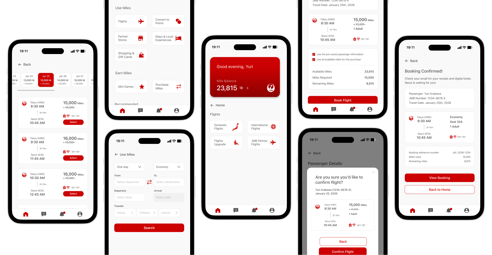
The Problem
Users: "The app feels too dense and stressful to navigate. Makes me want to give up."
Despite earning miles, users were abandoning the booking process due to cognitive overload and navigation difficulties. Users procrastinated or abandoned travel plans due to system-induced stress.
The Solution
I engineered a frictionless booking flow that ensured clarity.
I revised and reconstructed the information architecture and redesigned the visual hierarchy to reduce user's stress and makes sure their excitement for travel is preserved.
1. Empathize
Methodology
I conducted qualitative user interviews with frequent JAL travelers to uncover behavioral patterns and pain points. While user backgrounds varied, a consistent thematic friction emerged: a discoverability gap regarding mile redemption.
Key Insights
- Users associated the app with labor rather than reward.
- Fear of making a mistake due to a dense, system-like interface.
- The complexity of the UI actively diminished the joy of travel.
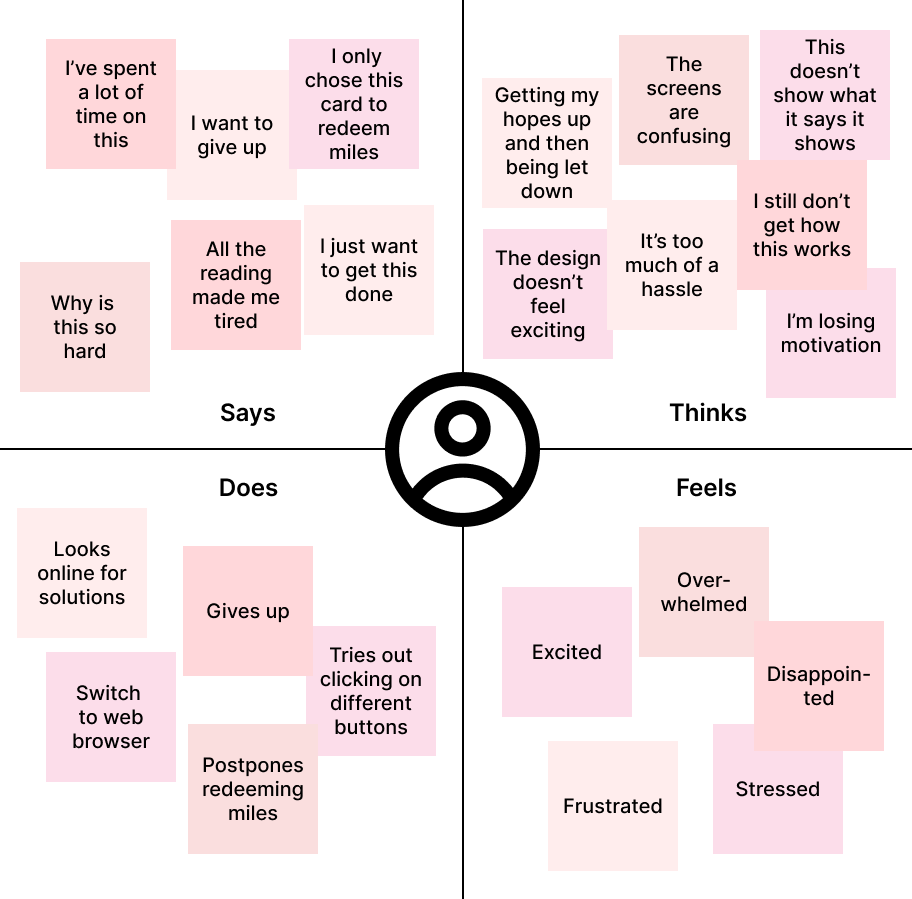
2. Define
My findings from empathizing made the issue clear: Travel enthusiasts are hindered from redeeming miles by unstructured information architecture and high cognitive load. This creates a disconnect between the brand's reward system and the user's emotional experience.
HMW (How Might We) Framework
- How might we increase the scannability of the redemption entry point?
- How might we condense a multi-step process into a single, breathable flow?
- How might we align the UI with the excitement of the destination rather than the complexity of the data?
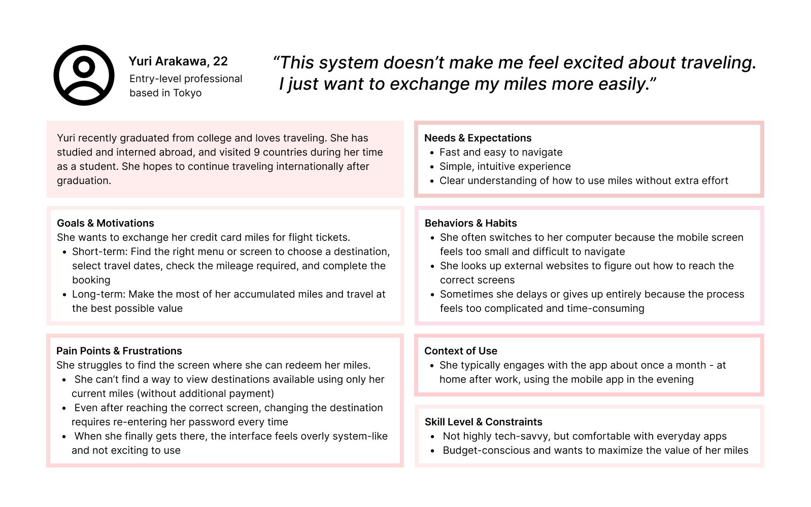
3. Ideate & Prototype
I audited the original user journey and identified six critical drop-off points. My revised flow minimizes choice paralysis by grouping actions into logical categories—Flight, Life, and Gifts— ensuring users never feel lost in a sea of data.
Information Architecture & Flow
I audited the original user journey and identified six critical drop-off points. My revised flow minimizes choice paralysis by grouping actions into logical categories: Flight, Life, and Gifts, ensuring users never feel lost in a sea of data.
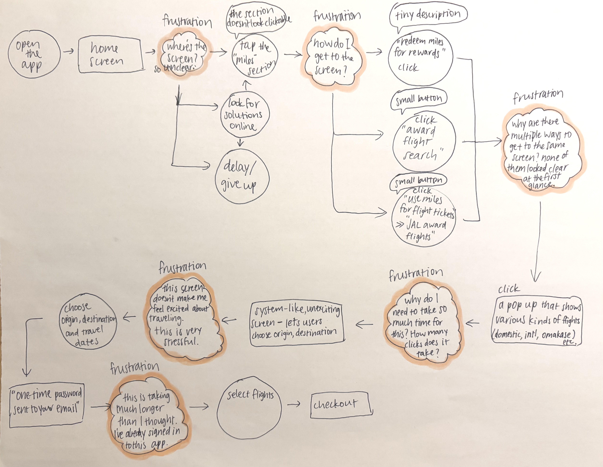
4. Design & Visual Language
Initial design (left) relied heavily on the brand's dark gray palette, which inadvertently created a heavy and intimidating atmosphere. I pivoted to a minimalist approach (right):
- I reserved the signature JAL Red strictly for high-impact CTAs and core brand identity markers (like the Miles Balance card), ensuring a high signal-to-noise ratio.
- I expanded whitespace and utilized Medium font weights for labels to improve legibility for tired, post-work users (solving for accessibility).
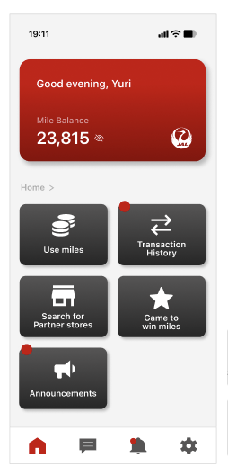
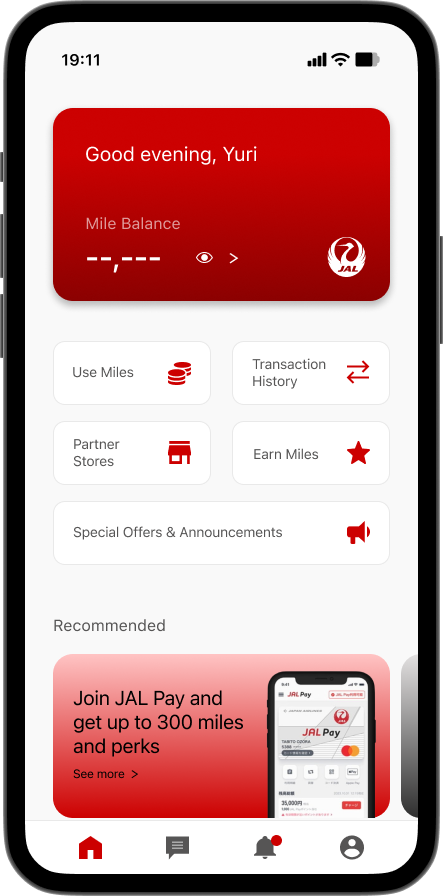
5. Feedback & Iteration
I asked users from the initial interviews to test the prototype under a hypothetical scenario and evaluate it.
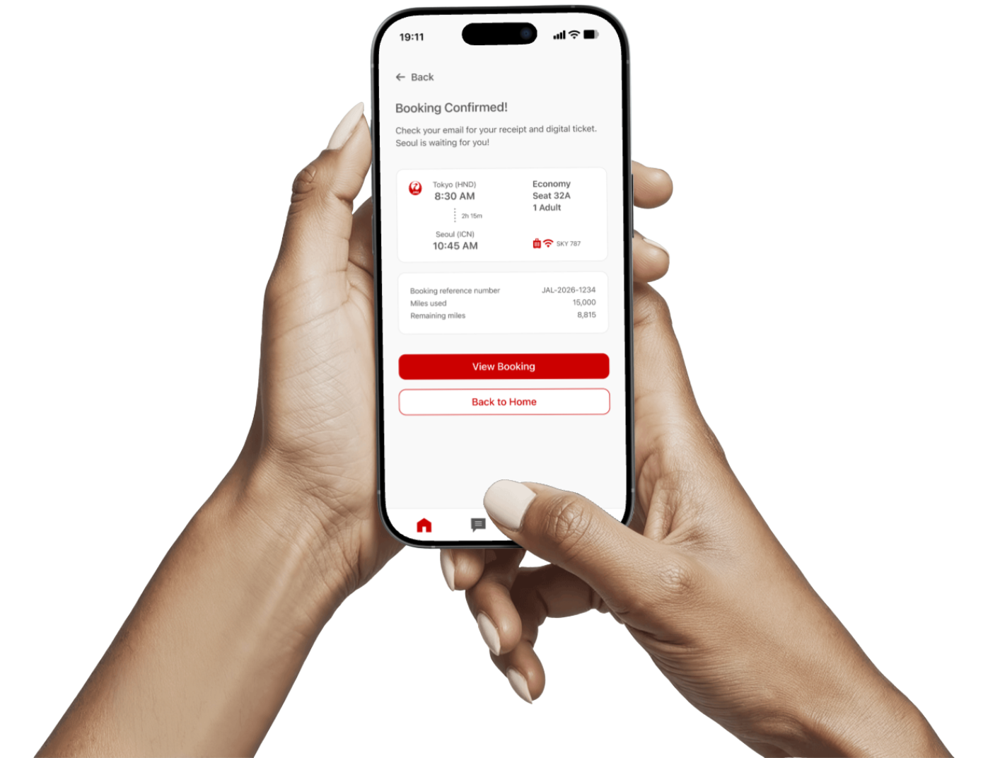
6. Before (left) vs After (right)
Home Page
- The revised version ensured a clearer visual hierarchy and consistent brand color usage. It laid out eye-catching elements (icons, the signature red) in an intentional hierarchy. After feedback from users, I reduced the number of icons on the home page so that user wouldn't need to scroll down, which resulted in faster navigation to the Use Miles page.
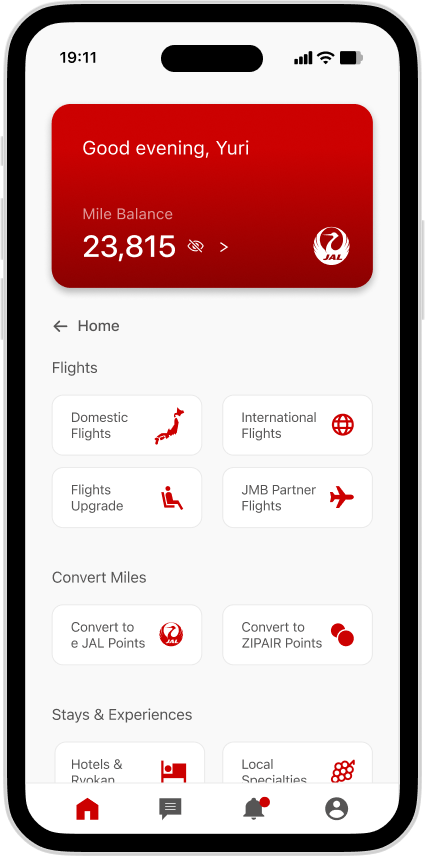
Mile Usage Navigation Page
- In the revised version, I ensured a new page rather than a pop-up for a smoother navigation from the home page. Options are categorized for easier navigation.
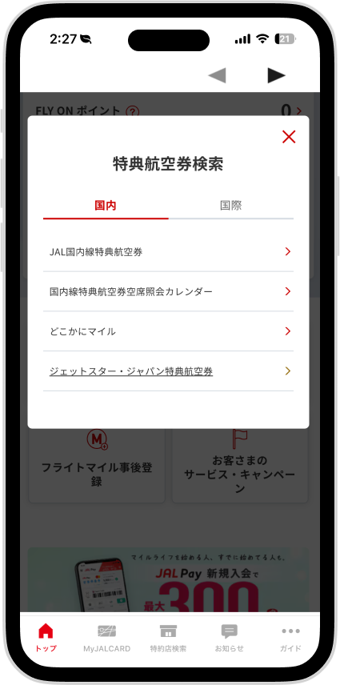
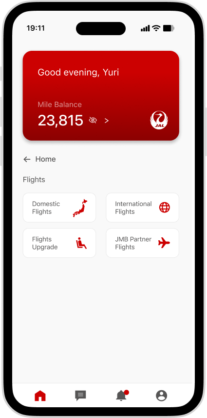
Flight Option Page
- The revised version ensured clearer navigation with an intuitive layout, including the airline icon, highlighted miles and times, and CTA buttons with the highlighted signature brand red.
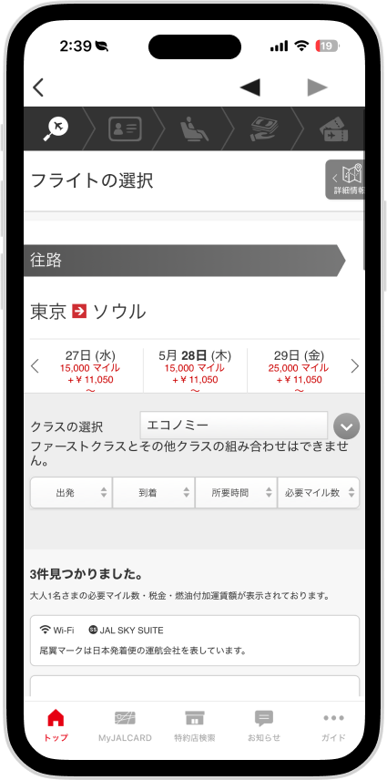
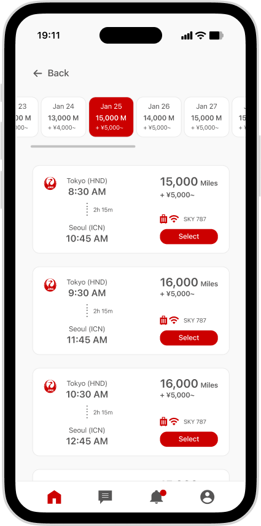
- My biggest takeaway was the power of visual hierarchy in reducing cognitive load. By strategically using whitespace, color, and typography, I was able to guide users through the app more intuitively. Moving from a heavy, system-like interface to a minimalist, red-accented hierarchy solved the procrastination loop identified in my research.
- Accessibility check: I prioritized accessibility by ensuring all core interactions and text elements meet WCAG 2.1 AA standards.
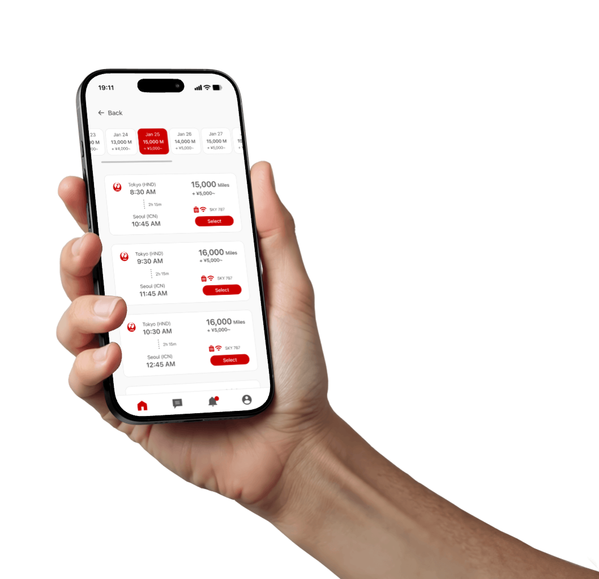